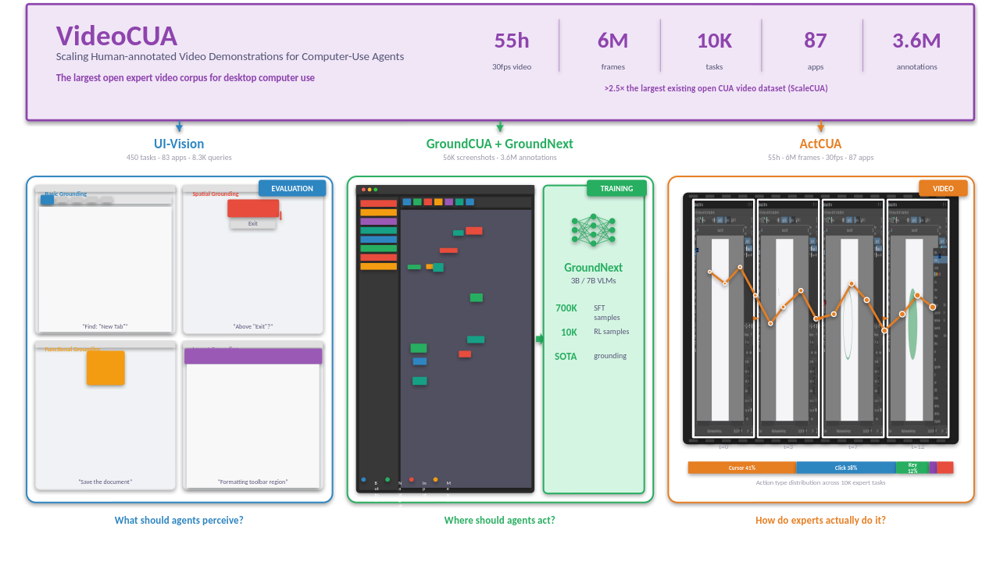
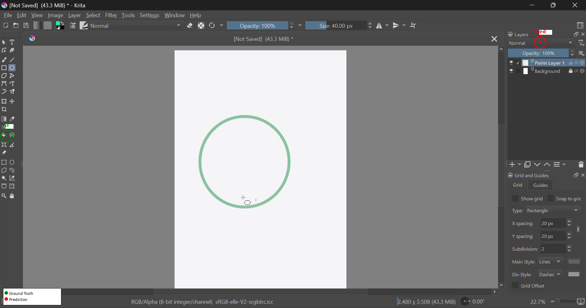
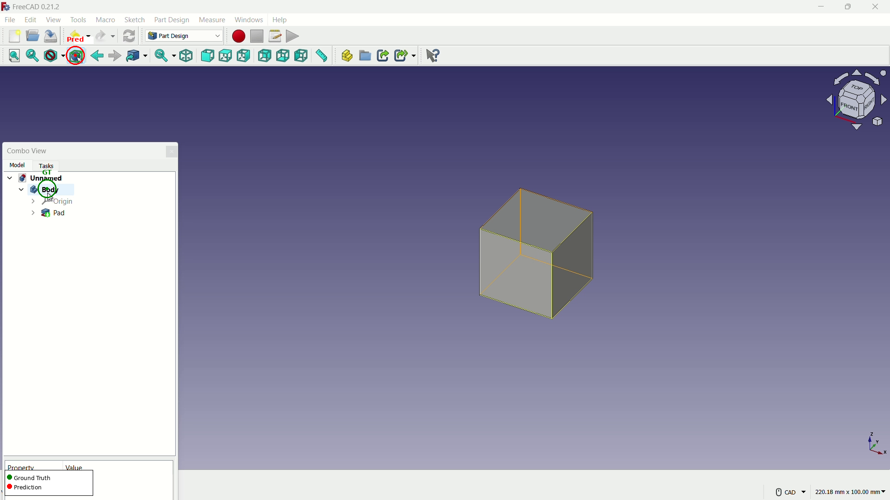
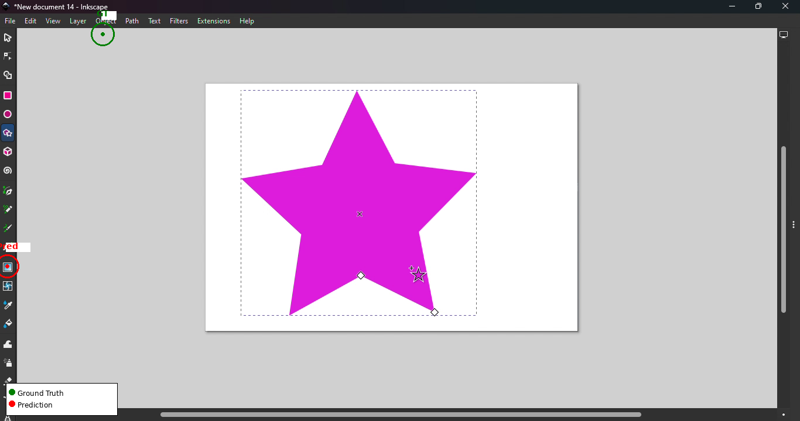
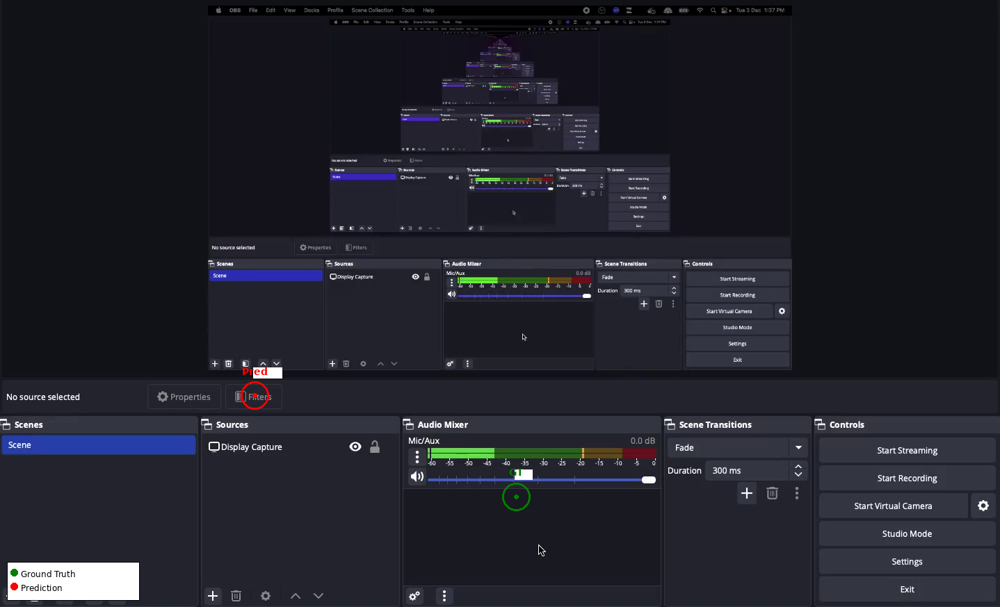

CUA-Suite: Scaling Human-annotated Video Demonstrations for Computer-Use Agents
A unified ecosystem of expert video demonstrations and dense annotations for training and evaluating desktop computer-use agents across 87 professional applications.
A unified ecosystem of expert video demonstrations and dense annotations for training and evaluating desktop computer-use agents across 87 professional applications.
CUA-Suite unifies three complementary resources into a single ecosystem for full-stack computer-use intelligence.
Computer-use agents (CUAs) hold great promise for automating complex desktop workflows, yet progress toward general-purpose agents is bottlenecked by the scarcity of continuous, high-quality human demonstration videos. We introduce CUA-Suite, a large-scale ecosystem of expert video demonstrations and dense annotations for professional desktop computer-use agents. At its core is VideoCUA, which provides approximately 10,000 human-demonstrated tasks across 87 diverse applications with continuous 30 fps screen recordings, kinematic cursor traces, and multi-layered reasoning annotations averaging 497 words per step, totaling approximately 55 hours and 6 million frames of expert video—more than 2.5× the largest existing open dataset. CUA-Suite further provides UI-Vision, a rigorous benchmark for evaluating element grounding, layout understanding, and action prediction, and GroundCUA, a large-scale grounding dataset with 56K annotated screenshots and over 5 million element annotations used to train GroundNext vision-language models. Together, these resources provide dense, causal supervision in which every element on screen is labeled and every action is logged.
The largest open expert video corpus for desktop computer use. Continuous 30 fps recordings with kinematic cursor traces and multi-layered reasoning annotations.
Large-scale pixel-precise UI grounding dataset built entirely by human curators. Powers the training of GroundNext 3B/7B vision-language models.
Rigorous desktop-centric benchmark evaluating element grounding, layout understanding, and action prediction across diverse professional applications.
Continuous expert video demonstrations enriched with multi-layered reasoning annotations for training foundation action models.

VideoCUA pipeline: raw 30 fps video recordings are enriched with dense multi-layered reasoning annotations to produce structured state-action trajectories.
Each trajectory step is enriched with four complementary annotation layers, averaging 496.7 words per step:
Unlike web-centric datasets dominated by click actions, VideoCUA captures the full spectrum of desktop interaction primitives:
VideoCUA is the only large-scale, human-curated dataset providing continuous 30 fps expert video for professional desktop applications with multi-layered reasoning annotations.
| Dataset | Platform | Tasks | #Envs | Video | Desktop | Human | CoT | Scale | |
|---|---|---|---|---|---|---|---|---|---|
| Web | |||||||||
| Mind2Web | Web | 2,350 | 137 | ~17K SS | |||||
| AgentTrek | Web | 10,398 | 127 | short | ~126K SS | ||||
| Mobile | |||||||||
| AITW | Mobile | 715K | 357 | Mix. | ~4.6M SS | ||||
| GUI-Odyssey | Mobile | 8,334 | 212 | Mix. | ~128K SS | ||||
| Desktop & Cross-platform | |||||||||
| OmniACT | D+W | 9,802 | 65 | ~9.8K SS | |||||
| OSWorld | Desktop | 369 | 9 | Eval. | |||||
| VideoGUI | Desktop | 178 | 11 | Mix. | ~7h | ||||
| OpenCUA | Desktop | 22,625 | 330+ | long | ~421K SS | ||||
| ScaleCUA | Cross | ~19K | — | Mix. | ~2M SS | ||||
| VideoCUA (Ours) | Desktop | ~10K | 87 | long | 55h (6M fr.) | ||||
SS = screenshots. Video = continuous video recordings released with the dataset. CoT = chain-of-thought annotations (long = multi-layered, short = brief).
We evaluate foundation action models on 256 sampled VideoCUA tasks spanning 87 applications to reveal the landscape of capabilities and limitations.
Task-level prediction with 5-step action history, 1,999 coordinate-based predictions.
| Model | Mean Px ↓ | Med. Px ↓ | @20px ↑ | @50px ↑ |
|---|---|---|---|---|
| OpenCUA-7B | 387.5 | 236.0 | 7.9% | 16.5% |
| OpenCUA-32B | 274.2 | 97.0 | 22.0% | 37.7% |
49 tasks, 576 steps evaluated for functional correctness across all action types.
| Metric | Accuracy | Detail |
|---|---|---|
| Overall Stepwise | 57.6% | 332 / 576 |
| Action Selection | 85.9% | 495 / 576 |
| Spatial Grounding | 52.4% | 195 / 372 |
| Non-coordinate | 67.6% | 138 / 204 |
Human evaluation reveals a striking asymmetry: models select the right action type but fail to localize the target UI element.
Key finding: Spatial grounding, not action selection, is the primary bottleneck for current foundation action models on desktop applications. The model frequently identifies the correct action type and intent but fails to localize the target UI element precisely. Per-application performance ranges from 3.6% to 73.3% @50px, with specialized creative tools posing the greatest challenge.
Ground truth Model prediction




CUA-Suite's continuous video streams and dense annotations support emerging research directions beyond traditional action prediction.
Dense, human-verified bounding-box annotations covering all interactable elements—including canvas-based and custom-drawn widgets missed by DOM-based approaches—together with functional descriptions for semantics-aware captioning.
Intermediate cursor movements and complete video context preserve kinematic priors (e.g., Fitts's Law deceleration), enabling training of imitation learning or offline RL policies for feedback-driven navigation.
30 fps video recordings paired with timestamped actions provide dense (st, at, st+1) triplets for action-conditioned video generation and visual lookahead planning for desktop workflows.
Continuous expert video recordings with task-level annotations provide positive demonstrations for training reward models, while dense step-level annotations enable fine-grained, step-wise reward signals.
If you find CUA-Suite useful for your research, please cite our work.
@article{jian2025cuasuite,
title={CUA-Suite: Scaling Human-annotated Video Demonstrations
for Computer-Use Agents},
author={Jian, Xiangru and Nayak, Shravan and Lin, Kevin Qinghong
and Feizi, Aarash and Li, Kaixin and Bechard, Patrice
and Gella, Spandana and Rajeswar, Sai},
journal={arXiv preprint},
year={2025}
}
CUA-Suite builds on UI-Vision and GroundCUA. Please also cite the individual components if you use them.